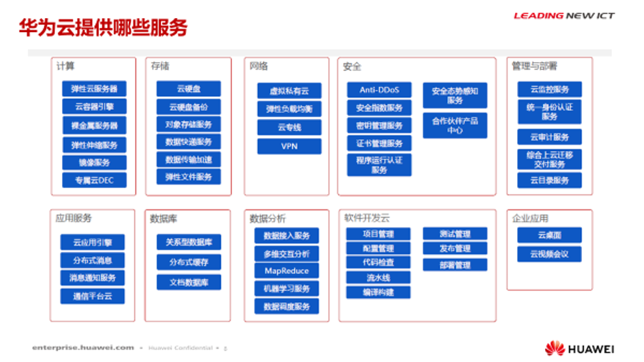

2020年必梵成为华为云指定服务商，提供包含弹性云服务器、云数据库、云安全等云计算服务，软件开发服务，大数据和人工智能服务，以及场景化的解决方案的领先的公有云服务及专属云服务。
在5G时代，必梵结合云时代，将应用平台部署上线。由此，必梵开启了将移动互联优势与物联网、大数据和AI融合，把工具型的政企通信服务扩展到智慧型的政企信息化服务，并完善多行业综合解决方案的业务升级/服务升级。
1．云咨询、云迁移、多云融合、云容灾、云备份等等
2. 故障预判、故障分析、整体健康检查、性能优化、培训等等
